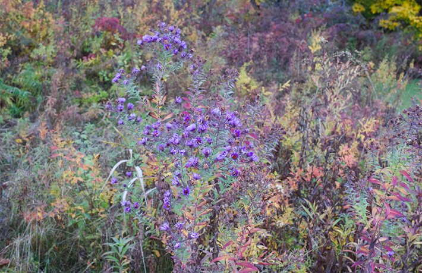

When I was younger, autumn’s beauty was uncomplicated. Now I’ve reached the age when autumn is a reminder of mortality. Gloriously turning leaves foreshadow their own fading; cool breezes promise the coming cold. The people I love will die and so will I, whispers the season, and on those bittersweet days I take solace in New England asters: a tall, purple-blossomed perennial found across much of the United States and Canada, blooming in early autumn and remaining in flower until the season’s end, long after other blossoms are a sun-hazed memory.
They’re beautiful, but that’s not the only comfort asters bring. I love them because they ease the passage of bumblebees from this life. By mid-autumn the life cycle of their colonies is nearly finished; the workers who foraged so tirelessly all summer have only a few weeks or days left. So too the male bees who are born in late summer, departing soon after to find queens with whom to mate before spending their own final days alone on the landscape.
For them the asters are a last source of pollen and nectar. The bees who consume them have only a few days left, but at least their stomachs will be full. And when I walk along my driveway on late autumn evenings, I see bumblebees lying atop the asters, sometimes two to a blossom, the petals embracing them as sunlight fades. At night they will sleep there, and some will die when the temperature falls—but at least they will do so on a bed of pollen, their senses and perhaps even their dreams suffused with its smell and taste. I like to think they will be content.
The sleep of bumblebees resembles our own, alternating between a deep slumber and REM.
Now, some people might be reluctant to think that a bee would experience all this in a relatable way. They might catch themselves in that moment of kinship and think they are being too sentimental. Yet research on the minds of bees gives us this permission—not to think of them as tiny humans, necessarily, but to speculate about what they think and feel as they rest on those asters.
Much is known about the brains of bees, whose anatomy and chemistry in many ways resembles our own. Studies of bee behavior show the resemblance is more than superficial. Countless experiments describe their ability to learn and remember; more fundamentally, bees are able to direct their attention selectively—a hallmark of subjective consciousness. They also have emotions: the capacity to experience not only life’s physicality, but its feelings.
This was first explored in two now-classic studies of what are known as cognitive biases: the tendency to view ambiguous situations in an optimistic or pessimistic light. In humans, these biases often reflect our moods. A happy person will see the proverbial glass as half-full, while an unhappy person will see it as half-empty. In honeybees this was tested by teaching them to associate different scents with tastes—one with a sweet solution, another with a bitter brew—and then presenting them with an intermediate odor.

BROKEN DREAMS: Studies show pesticides can disrupt the normal sleep patterns of bees, causing them to slumber more in daytime and impairing their ability to forage. A field of asters like this one in Maine can offer bees a final peaceful rest. Photo by Brandon Keim.
After their colony was shaken, simulating a predator attack, bees hesitated to approach the uncertain smell. In short, they appeared to be in bad moods. Another, similar study of bumblebees found that, having first received a sugary treat, they were more likely to investigate an ambiguous cue. The findings moved bees beyond the raw momentary feeling of pain or pleasure and into a more truly emotional territory, the sort of steady state one could imagine after a good meal.
The findings were made in a laboratory, of course, rather than directly testing whether a bee sipping nectar from an aster is happy. “There is no data, no study, no demonstration,” says Mathieu Lihoreau, an evolutionary biologist who studies insect cognition at the University of Toulouse in France, and the author of What Do Bees Think About? “But it’s very likely.” Not only should bumblebees take pleasure in their aster meals, Lihoreau says, but the blossoms offer the comfort of familiarity. They know the flowers well. “If you are in a familiar place, and you know all the stimuli, then we as humans feel better,” he says. Though it’s too soon to “say with certainty that they feel the same, it’s a possibility.” And not only are the asters familiar; they are warm. Over the course of a day their blossoms absorb the October sun’s rays, raising their temperature above the surrounding air by several degrees. Bumblebees, whose bodies may be even warmer than our own, generate their own heat by vibrating their flight muscles. The extra heat should be welcome on a cool evening.
As night falls, the flowers’ petals close around the bumblebees, offering the comfort of a warm embrace—perhaps intimating the press of bodies in their colony—as they fall asleep. For insects do in fact sleep, and the sleep of bumblebees also resembles our own, alternating between a deep slumber and a shallower, more mentally active state that seems akin to REM sleep, with our rapid eye movements replaced by a twitching of antennae. Which poses the question: Do those sleeping bees dream?
In humans, dreams occur in both deep and REM sleep, though it’s the latter that we recall most vividly. The dreams are a manifestation of what occurs in our brains at these times: Deep sleep seems to be a period of memory consolidation, when a brain replays events from the day, saving the most salient information and pruning what can be discarded.
What might a bumblebee dream of? Perhaps the flowers they have visited, the path to get there.
Researchers have explored the deep-sleep state of honeybees, using an odor associated with a training task to enhance the sleeping insects’ memories of what they had learned. When tested upon waking, the bees’ recall was boosted in comparison to bees who did not receive that odor prompt. The same phenomenon is seen in similar experiments with humans, leading the researchers to conclude that deep sleep for bees is, as it is for us, a time for processing memories.
“In deep sleep, their muscles are fully relaxed and their antennae and body sink to the ground,” says Hanna Zwaka, a neurobiologist at the Leibniz Institute for Neurobiology in Germany, who led the study of sleeping honeybees. “What does that have to do with dreaming? We believe that some of our dreaming could reflect similar reactivations.”
Less is known about the active sleep state in bees, but one theory holds that REM sleep—its dream-saturated mammalian analogue—occurs while a brain optimizes its models of the world. Rather than reviewing a day’s memories, the REM-sleeping brain runs simulations reassembled from previous experiences, preparing itself to better navigate an unpredictable world upon waking. Active sleep has not been studied in bees, but it has been documented in fruit flies.
“The brain looks like it’s still awake, but the fly is unresponsive to the outside world,” says Bruno van Swinderen, a neurobiologist at the University of Queensland in Australia who has studied sleep and cognition in flies. “They’re in some kind of altered state that is basically similar to what we think is happening in REM sleep.” The same likely occurs in bees, he says.
And what might a bumblebee dream of? The moments of their life, perhaps: the flowers they have visited, their taste and smell. The paths they followed to get there. Other bees they have known. Zwaka thinks bees “might dream about anything they have learned—colors, odors, or places.” Perhaps, says Zwaka, my bumblebees atop their asters dream of their warm home.
I wonder whether, much as our own dreams may incorporate some stimulus from the external world—a song drifting through an open window, mysteriously woven into the dreamtime narrative—so might the same happen to a bee. The warm aster blossom embrace, the full stomach, every sense pervaded by the flowers that are so central to their existence: How could a dream in such conditions be anything but beautiful?
Late in autumn, when only a few asters remain in flower and the days feel suddenly short, I walk by them each evening and morning, looking for bees and hoping for just one more day before the hard frost that will bring their final sleep. Of course, the days will run out; rather than being revived by the sun, they will fall from the flowers. Foreknowledge and its sadness are inescapable. But at least there is this small peace, this kind departure for the bumblebees whose efforts have helped the world bloom.
Not many animals die so well. Most will die of disease, injury, starvation, or predation. And as much as we want to believe that humans have exempted ourselves from this cruel fact of life, our own deaths are frequently protracted and painful. To see an aster, though, is to know that at least someone is departing with grace. To tend asters is a gesture of hope, a small and profound act of benevolence.
It is winter now. The asters have turned brown and dormant. Bumblebee queens are dormant too, nestled in the burrows from which they will emerge in tandem with spring’s first flowers. The blossoms and their bees are a memory and an anticipation, but the days are getting longer. Soon it will be time for planting. 
Lead image: Brandon Keim